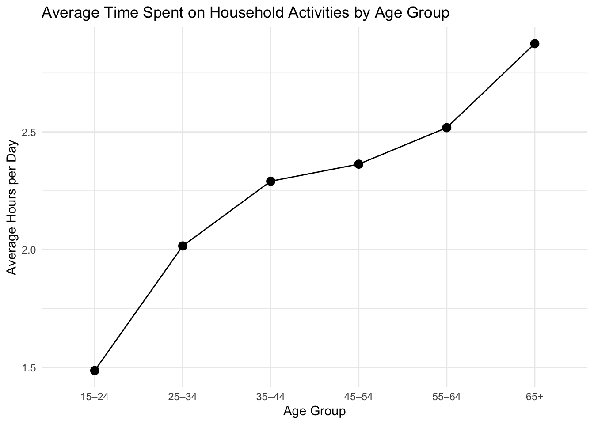
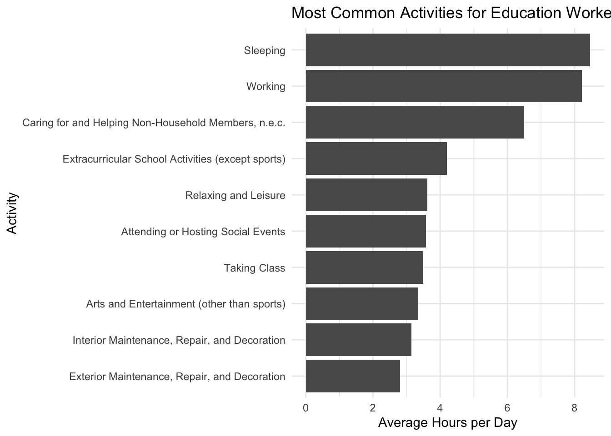
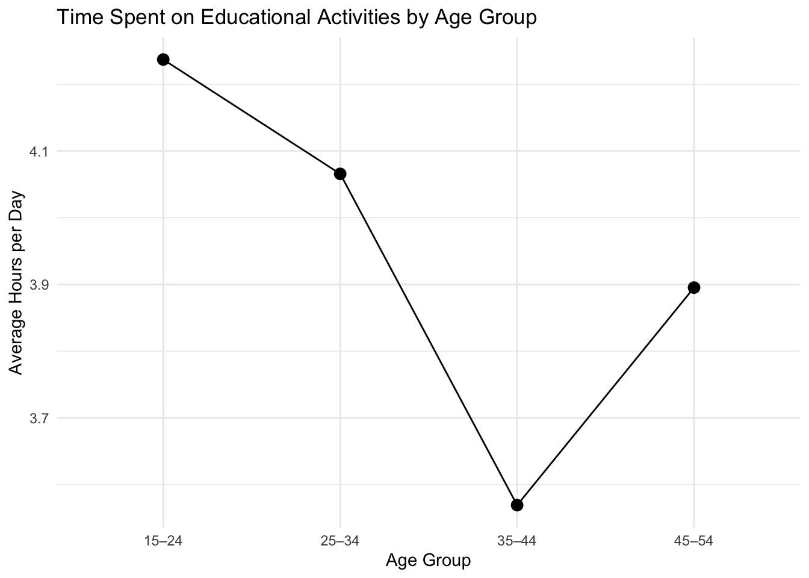
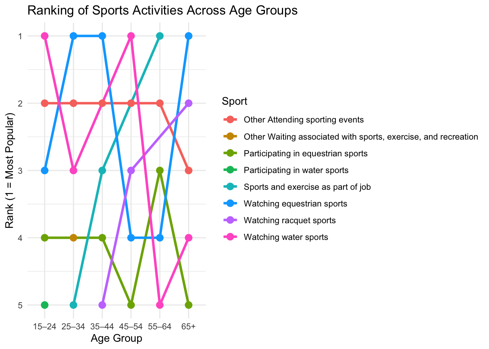
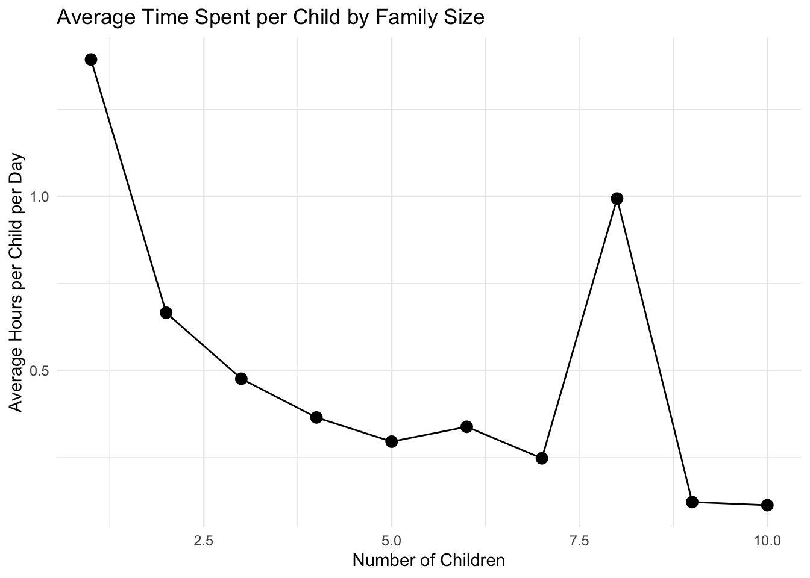

load_atus_data <- function(file_base = c("resp", "rost", "act", "cps")) {
if (!dir.exists(file.path("data", "mp02"))) {
dir.create(file.path("data", "mp02"), showWarnings = FALSE, recursive = TRUE)
}
file_base <- match.arg(file_base)
file_name_out <- file.path(
"data",
"mp02",
glue("atus{file_base}_0324.dat")
)
file <- read_csv(file_name_out, show_col_types = FALSE)
result <- switch(
file_base,
cps = file |>
rename(participant_id = TUCASEID),
resp = file |>
rename(
survey_weight = TUFNWGTP,
time_alone = TRTALONE,
survey_year = TUYEAR
),
rost = file |>
mutate(
sex = case_when(
TESEX == 1 ~ "M",
TESEX == 2 ~ "F",
TRUE ~ NA_character_
)
),
act = file |>
mutate(
activity_n_of_day = TUACTIVITY_N,
time_spent_min = TUACTDUR24,
start_time = TUSTARTTIM,
stop_time = TUSTOPTIME,
level1_code = paste0(TRTIER1P, "0000"),
level2_code = paste0(TRTIER2P, "00"),
level3_code = TRCODEP
)
)
if (file_base == "cps") {
return(result)
} else {
return(
result |>
rename(participant_id = TUCASEID) |>
select(matches("[:lower:]", ignore.case = FALSE))
)
}
}
load_atus_activities <- function() {
if (!dir.exists(file.path("data", "mp02"))) {
dir.create(file.path("data", "mp02"), showWarnings = FALSE, recursive = TRUE)
}
dest_file <- file.path(
"data",
"mp02",
"atus_activity_codes.csv"
)
if (!file.exists(dest_file)) {
download.file(
"https://michael-weylandt.com/STA9750/mini/atus_activity_codes.csv",
quiet = TRUE,
destfile = dest_file,
mode = "wb"
)
}
read_csv(dest_file, show_col_types = FALSE)
}How Do You Do ‘You Do You’? An Analysis of Time Use Patterns in the United States (2003–2024)
Introduction
The idea of “you do you” suggests that individuals make choices about how to spend their time based on personal priorities, preferences, and circumstances. But what does that actually look like in practice?
The American Time Use Survey (ATUS) provides a detailed view into how people in the United States allocate their time across various activities, from work and leisure to personal care and household responsibilities. Using data from 2003 to 2024, this report explores how individuals distribute their time across major activity categories and the patterns that emerge from these choices.
By combining activity-level data with respondent-level characteristics and activity classification codes, the analysis aims to better understand how people structure their daily lives and where their time is most heavily concentrated.
The following section outlines how the data was acquired and prepared for analysis.
TASK 1 - Data Acquisition
This analysis uses data from the American Time Use Survey (ATUS), specifically the 2003–2024 aggregate microdata files. These datasets include activity-level records, respondent-level demographic information, and activity classification codes.
The required datasets were manually downloaded and stored within the project directory. Helper functions are then used to read and structure the data into a consistent format for analysis.
The following code loads the packages and defines helper functions used to read the ATUS files from the local project folder.
atus_resp <- load_atus_data("resp")
atus_rost <- load_atus_data("rost")
atus_act <- load_atus_data("act")
atus_cps <- load_atus_data("cps")Warning: One or more parsing issues, call `problems()` on your data frame for details,
e.g.:
dat <- vroom(...)
problems(dat)atus_activities <- load_atus_activities()Data Preparation
To prepare the data for analysis, the activity-level dataset (atus_act) was used as the base table because it contains the detailed record of how each respondent spent time throughout the day. This dataset was first joined with the respondent file to incorporate respondent-level variables such as survey year, time alone, and survey weights.
Gender information required additional care. Although the roster file contains sex information, it includes multiple household members for each case. To avoid duplicating activity records through an incorrect many-to-many join, only the respondent-level roster entry was retained by filtering to TULINENO == 1. This respondent-level sex variable was then joined to the activity data.
Finally, the activity code mapping file was joined to the combined dataset so that coded activity levels could be interpreted using readable labels.
rost_raw <- read_csv("data/mp02/atusrost_0324.dat", show_col_types = FALSE)
atus_joined <- atus_act |>
left_join(atus_resp, by = "participant_id") |>
left_join(
rost_raw |>
filter(TULINENO == 1) |>
transmute(
participant_id = TUCASEID,
sex = case_when(
TESEX == 1 ~ "M",
TESEX == 2 ~ "F",
TRUE ~ NA_character_
)
),
by = "participant_id"
)atus_final <- atus_joined |>
left_join(
atus_activities,
by = c(
"level1_code" = "code_level1",
"level2_code" = "code_level2",
"level3_code" = "code_level3"
)
)The resulting dataset combines activity duration, respondent-level characteristics, gender, and readable activity labels into a single table suitable for analysis.
Analysis
With the dataset fully prepared, the next step is to explore how individuals allocate their time across different activities. The analysis begins by examining the average time spent across major activity categories to identify which activities dominate daily time use.
TASK 2 - Join Strategy Practice
Before proceeding with the main analysis, I consider how different ATUS datasets would need to be joined to answer specific questions. This helps ensure that the correct level of detail is used and that joins are applied appropriately.
To determine the total hours spent on sleeping-type activities, the activity-level dataset is required because it contains both the duration and activity classification codes. The activity mapping dataset is then used to identify which codes correspond to sleep-related activities. A join between these two datasets is necessary, while respondent-level data is not required for this calculation.
sleep_hours <- atus_act |>
left_join(
atus_activities,
by = c("level1_code" = "code_level1",
"level2_code" = "code_level2",
"level3_code" = "code_level3")
) |>
filter(str_detect(task_level1, "Sleep")) |>
summarise(total_hours = sum(time_spent_min, na.rm = TRUE) / 60)To identify female participants who reported spending no time alone in 2003, respondent-level data is required for time alone and survey year. Gender information is obtained from the roster dataset, which must be filtered to retain only the respondent-level record. These datasets must be joined at the participant level to combine demographic and behavioral information.
female_no_alone <- atus_resp |>
filter(survey_year == 2003, time_alone == 0) |>
left_join(
rost_raw |>
filter(TULINENO == 1) |>
transmute(
participant_id = TUCASEID,
sex = case_when(
TESEX == 1 ~ "M",
TESEX == 2 ~ "F"
)
),
by = "participant_id"
) |>
filter(sex == "F") |>
nrow()Task 3: Adding Additional Demographic Variables
In this section, additional demographic variables are constructed to enrich the analysis. These variables provide insight into respondents’ household composition, marital status, employment situation, education, and the context in which activities occur.
Task 3: Adding Additional Demographic Variables
To support the later analysis, additional demographic variables are created from the raw respondent and activity files. Rather than repeatedly modifying the helper function, these variables are constructed directly in a separate preparation step. This keeps the workflow cleaner and makes the source of each variable easier to track.
Number of Children Under 18
The respondent file includes a direct measure of how many children under age 18 live in the respondent’s household. This variable is stored in TRCHILDNUM, so it can be renamed directly for clarity.
Marital Status
Because the official marital-status variable was not part of the original reduced respondent dataset, a proxy is used based on whether a spouse is present in the household. The variable TRSPPRES indicates whether a spouse is present, and respondents with a spouse present are classified as married.
Employment Status
Employment status is measured using TELFS, which classifies respondents according to their labor force status. These codes are recoded into readable categories.
College or University Enrollment
College enrollment requires combining two variables. TESCHENR indicates whether the respondent is enrolled in school, while TESCHLVL identifies whether that enrollment is specifically in college or university rather than high school.
Location of Activity
The activity file includes TEWHERE, which records where each activity occurred. This variable is recoded into readable location labels.
resp_raw <- read_csv("data/mp02/atusresp_0324.dat", show_col_types = FALSE)
resp_task3 <- resp_raw |>
transmute(
participant_id = TUCASEID,
survey_weight = TUFNWGTP,
time_alone = TRTALONE,
survey_year = TUYEAR,
num_children = TRCHILDNUM,
is_married = TRSPPRES == 1,
employment_status = case_match(
TELFS,
1 ~ "Employed - at work",
2 ~ "Employed - absent",
3 ~ "Unemployed - on layoff",
4 ~ "Unemployed - looking",
5 ~ "Not in labor force",
.default = NA_character_
),
is_college_student = TESCHENR == 1 & TESCHLVL == 2
)Warning: There was 1 warning in `transmute()`.
ℹ In argument: `employment_status = case_match(...)`.
Caused by warning:
! `case_match()` was deprecated in dplyr 1.2.0.
ℹ Please use `recode_values()` instead.act_task3 <- read_csv("data/mp02/atusact_0324.dat", show_col_types = FALSE) |>
transmute(
participant_id = TUCASEID,
activity_n_of_day = TUACTIVITY_N,
activity_location = case_match(
TEWHERE,
1 ~ "Respondent's home or yard",
2 ~ "Respondent's workplace",
3 ~ "Someone else's home",
4 ~ "Restaurant or bar",
5 ~ "Place of worship",
6 ~ "Grocery store",
7 ~ "Other store/mall",
8 ~ "School",
9 ~ "Outdoors away from home",
10 ~ "Library",
11 ~ "Other place",
12 ~ "Car, truck, or motorcycle (driver)",
13 ~ "Car, truck, or motorcycle (passenger)",
14 ~ "Walking",
15 ~ "Bus",
16 ~ "Subway/train",
17 ~ "Bicycle",
18 ~ "Boat/ferry",
19 ~ "Taxi/limousine service",
20 ~ "Airplane",
21 ~ "Other mode of transportation",
30 ~ "Bank",
31 ~ "Gym/health club",
32 ~ "Post Office",
89 ~ "Unspecified place",
99 ~ "Unspecified mode of transportation",
.default = NA_character_
)
)These variables are then available for later analysis by joining resp_task3 and act_task3 back to the main analysis dataset where needed.
task3_summary <- tibble(
measure = c(
"Average number of children under 18",
"Number classified as married",
"Number enrolled in college or university"
),
value = c(
round(mean(resp_task3$num_children, na.rm = TRUE), 2),
sum(resp_task3$is_married, na.rm = TRUE),
sum(resp_task3$is_college_student, na.rm = TRUE)
)
)
knitr::kable(task3_summary, col.names = c("Measure", "Value"))| Measure | Value |
|---|---|
| Average number of children under 18 | 0.8 |
| Number classified as married | 126427.0 |
| Number enrolled in college or university | 12894.0 |
employment_table <- resp_task3 |>
count(employment_status, sort = TRUE) |>
rename(`Employment Status` = employment_status,
Count = n)
knitr::kable(employment_table)| Employment Status | Count |
|---|---|
| Employed - at work | 148458 |
| Not in labor force | 86841 |
| Unemployed - looking | 9501 |
| Employed - absent | 6824 |
| Unemployed - on layoff | 1184 |
location_table <- act_task3 |>
count(activity_location, sort = TRUE) |>
rename(`Activity Location` = activity_location,
Count = n)
knitr::kable(location_table)| Activity Location | Count |
|---|---|
| Respondent’s home or yard | 2095267 |
| NA | 907638 |
| Car, truck, or motorcycle (driver) | 672364 |
| Respondent’s workplace | 231498 |
| Someone else’s home | 161397 |
| Car, truck, or motorcycle (passenger) | 153114 |
| Other place | 146333 |
| Other store/mall | 97664 |
| Restaurant or bar | 92900 |
| Walking | 65016 |
| Outdoors away from home | 62606 |
| School | 45609 |
| Place of worship | 44515 |
| Grocery store | 43714 |
| Unspecified place | 13916 |
| Gym/health club | 11256 |
| Bus | 10416 |
| Subway/train | 5431 |
| Bank | 4466 |
| Bicycle | 3288 |
| Post Office | 3088 |
| Library | 2788 |
| Other mode of transportation | 1789 |
| Taxi/limousine service | 1688 |
| Airplane | 1577 |
| Boat/ferry | 674 |
| Unspecified mode of transportation | 9 |
Interpreting the Task 3 Results
The additional demographic variables were created successfully and their distributions appear reasonable.
First, the average number of children under age 18 living in respondents’ households is approximately 0.80. This suggests that, on average, respondents live with fewer than one child under 18, which is plausible given that the dataset includes adults at many different life stages.
Second, using the spouse-present proxy for marriage, 126,427 respondents in the dataset are classified as married. This is based on the presence of a spouse in the household rather than the official CPS marital-status variable.
Third, the employment-status distribution is also sensible. The largest group is Employed – at work, followed by Not in labor force, with smaller counts for the unemployed categories. This pattern is consistent with what would generally be expected in a large national survey.
Fourth, the most common activity location is the respondent’s home or yard, which appears far more often than any other location. This is intuitive, as many daily activities occur in the home. A substantial number of activities also have missing location values, which is expected because some ATUS activities do not collect location information.
Finally, 12,894 respondents are identified as enrolled in college or university rather than high school. This confirms that the Boolean condition combining school enrollment and school level worked as intended.
Data Integration and Initial Exploration
Introduction
In this section, the prepared ATUS datasets are combined and used to explore key behavioral patterns in the United States. Because ATUS is based on survey data, all estimates are computed using survey weights to ensure that results reflect the broader population rather than just the sampled respondents.
The variable survey_weight is used throughout this section to compute population-weighted averages and proportions. This allows for more accurate estimates of how Americans allocate their time.
Task 4: Exploratory Questions — Inline Values
In this task, key summary statistics are computed and reported directly within written sentences using Quarto’s inline code functionality.
analysis_data <- atus_final |>
left_join(resp_task3, by = "participant_id") |>
left_join(act_task3, by = c("participant_id", "activity_n_of_day"))Number of Respondents
Because each respondent can appear multiple times in the activity-level data, the number of respondents must be calculated using distinct participant IDs rather than total rows.
Since 2003, a total of 252808 unique respondents have participated in the ATUS survey.
Number of Sports Activities (Level 3)
To determine how many sports-related activities are included in ATUS, Level 3 activity descriptions are filtered for those containing the word “sport.” The number of distinct Level 3 activities matching this criterion is then calculated.
ATUS includes 22 distinct Level 3 activities related to watching sports.
Percent of Americans Who Are Retired
To estimate the share of Americans who are retired, a retirement indicator is first created based on employment status. A weighted mean is then used so that the estimate reflects the population rather than just the sample.
Approximately 32.18 percent of Americans are retired.
Average Hours of Sleep
Sleep-related activities are identified using Level 2 activity descriptions. Total sleep time is calculated for each respondent and then averaged using survey weights to reflect the U.S. population.
On average, Americans sleep approximately 8.78 hours per night.
Time Spent on Childcare
To answer this question, childcare-related activities are identified and totalled for each respondent. The sample is then restricted to respondents with one or more children in the household, and a weighted average is computed to estimate the average number of hours spent on childcare each day.
Among respondents with at least one child in the household, the average time spent on childcare activities is approximately 1.39 hours per day.
Task 5: Exploratory Questions — Table Answers
In this task, the exploratory questions are answered using compact summary tables rather than inline values. Because these questions compare groups, activities, and locations, tables provide a clearer way to present the results.
Lawn-Care Time: Retired vs. Full-Time Employed
To compare time spent on lawn-care, respondents are grouped into two categories: retired and full-time employed. Lawn-care activities are identified using the activity labels, and the total minutes spent on these activities are aggregated at the respondent level before computing weighted averages for each group.
library(gt)Warning: package 'gt' was built under R version 4.4.3# Step 1: build respondent data WITH weights (fresh, no dependency)
resp_task5 <- read_csv("data/mp02/atusresp_0324.dat", show_col_types = FALSE) |>
transmute(
participant_id = TUCASEID,
survey_weight = TUFNWGTP,
employment_status = case_match(
TELFS,
1 ~ "Employed - at work",
2 ~ "Employed - absent",
3 ~ "Unemployed - on layoff",
4 ~ "Unemployed - looking",
5 ~ "Not in labor force",
.default = NA_character_
),
full_time = TRDPFTPT == 1
)
# Step 2: compute lawncare per person FIRST
lawncare_person <- atus_final |>
filter(str_detect(task_level3, regex("lawn|garden|yard", ignore_case = TRUE))) |>
group_by(participant_id) |>
summarise(total_lawncare_min = sum(time_spent_min, na.rm = TRUE), .groups = "drop")
# Step 3: join AFTER aggregation (this avoids the error)
lawncare_table <- lawncare_person |>
left_join(resp_task5, by = "participant_id") |>
mutate(
work_group = case_when(
employment_status == "Not in labor force" ~ "Retired",
full_time ~ "Full-time employed",
TRUE ~ NA_character_
)
) |>
filter(!is.na(work_group)) |>
group_by(work_group) |>
summarise(
avg_lawncare_hours = weighted.mean(total_lawncare_min, survey_weight, na.rm = TRUE) / 60,
.groups = "drop"
) |>
mutate(avg_lawncare_hours = round(avg_lawncare_hours, 2)) |>
gt() |>
cols_label(
work_group = "Group",
avg_lawncare_hours = "Average Lawn-Care Hours"
) |>
tab_header(
title = "Average Time Spent on Lawn-Care",
subtitle = "Retired vs. full-time employed respondents"
)
lawncare_table| Average Time Spent on Lawn-Care | |
| Retired vs. full-time employed respondents | |
| Group | Average Lawn-Care Hours |
|---|---|
| Full-time employed | 2.05 |
| Retired | 2.05 |
Where High-Earning Americans Spend Most of Their Time
To answer this question, a respondent-level dataset is created with survey weights and weekly earnings. High-earning Americans are defined here as respondents in the top 25 percent of weekly earnings. Their activities are then grouped by broad activity category, and weighted average time is calculated to identify where they spend most of their time.
# Step 1: respondent-level earnings + weights
resp_task5_earnings <- read_csv("data/mp02/atusresp_0324.dat", show_col_types = FALSE) |>
transmute(
participant_id = TUCASEID,
survey_weight = TUFNWGTP,
weekly_earnings = TRERNWA
) |>
filter(!is.na(weekly_earnings), weekly_earnings > 0)
# Step 2: define high earners
earnings_cutoff <- quantile(resp_task5_earnings$weekly_earnings, 0.75, na.rm = TRUE)
high_earners <- resp_task5_earnings |>
filter(weekly_earnings >= earnings_cutoff)
# Step 3: aggregate time FIRST (no weights yet)
activity_person <- atus_final |>
group_by(participant_id, task_level1) |>
summarise(total_time = sum(time_spent_min, na.rm = TRUE), .groups = "drop")
# Step 4: join AFTER aggregation (this fixes the error)
high_earner_time_table <- activity_person |>
left_join(high_earners, by = "participant_id") |>
filter(!is.na(survey_weight)) |>
group_by(task_level1) |>
summarise(
avg_hours = weighted.mean(total_time, survey_weight, na.rm = TRUE) / 60,
.groups = "drop"
) |>
arrange(desc(avg_hours)) |>
slice_head(n = 10) |>
mutate(avg_hours = round(avg_hours, 2)) |>
gt() |>
cols_label(
task_level1 = "Activity Category",
avg_hours = "Average Hours"
) |>
tab_header(
title = "Where High-Earning Americans Spend Most of Their Time",
subtitle = "Top 10 activity categories (top 25% earners)"
)
high_earner_time_table| Where High-Earning Americans Spend Most of Their Time | |
| Top 10 activity categories (top 25% earners) | |
| Activity Category | Average Hours |
|---|---|
| Personal Care | 8.88 |
| Work and Work-Related Activities | 8.11 |
| Socializing, Relaxing, and Leisure | 3.57 |
| Education | 2.97 |
| Household Activities | 1.84 |
| Volunteer Activities | 1.73 |
| Caring for and Helping Household Members | 1.61 |
| Sports, Exercise, and Recreation | 1.48 |
| Religious and Spiritual Activities | 1.40 |
| Eating and Drinking | 1.21 |
Most Common Activities on Public Transportation
To answer this question, activities are restricted to those that take place on a bus, train, subway, boat, or ferry. The most common activities reported in these settings are then identified using the Level 3 activity descriptions.
library(gt)
# Step 1: rebuild location data (self-contained, no dependency)
act_task5 <- read_csv("data/mp02/atusact_0324.dat", show_col_types = FALSE) |>
transmute(
participant_id = TUCASEID,
activity_n_of_day = TUACTIVITY_N,
activity_location = case_match(
TEWHERE,
15 ~ "Bus",
16 ~ "Subway/train",
18 ~ "Boat/ferry",
.default = NA_character_
)
)
# Step 2: join ONLY what we need
transport_activity_table <- atus_final |>
left_join(act_task5, by = c("participant_id", "activity_n_of_day")) |>
filter(!is.na(activity_location)) |>
count(task_level3, sort = TRUE) |>
slice_head(n = 10) |>
rename(
`Activity` = task_level3,
`Count` = n
) |>
gt() |>
tab_header(
title = "Most Common Activities on Public Transportation",
subtitle = "Top 10 activities on buses, trains, subways, boats, or ferries"
)
transport_activity_table| Most Common Activities on Public Transportation | |
| Top 10 activities on buses, trains, subways, boats, or ferries | |
| Activity | Count |
|---|---|
| Travel related to working | 4781 |
| NA | 3607 |
| Travel related to taking class | 1516 |
| Travel related to eating and drinking | 1282 |
| Travel related to socializing and communicating | 1171 |
| Travel related to grocery shopping | 542 |
| Travel related to using medical services | 402 |
| Travel related to arts and entertainment | 379 |
| Travel related to participating in sports, exercise, or recreation | 374 |
| Other Traveling | 369 |
Time Spent on Four Favorite Activities by Age Group
To explore how time use varies across the life course, four selected activities are compared across age groups. Respondents are grouped into age bands, and weighted average time is calculated for each activity within each age group. This provides a compact view of how preferences and routines differ by age.
# Step 1: get age + weight from roster + respondent files
rost_age <- read_csv("data/mp02/atusrost_0324.dat", show_col_types = FALSE) |>
filter(TULINENO == 1) |>
transmute(
participant_id = TUCASEID,
age = TEAGE
)
resp_weights <- read_csv("data/mp02/atusresp_0324.dat", show_col_types = FALSE) |>
transmute(
participant_id = TUCASEID,
survey_weight = TUFNWGTP
)
resp_task5_age <- rost_age |>
left_join(resp_weights, by = "participant_id") |>
mutate(
age_group = cut(
age,
breaks = c(14, 24, 34, 44, 54, 64, 85),
labels = c("15–24", "25–34", "35–44", "45–54", "55–64", "65+")
)
)
# Step 2: select four favorite activities using the exact labels in the dataset
favorite_activity_table <- atus_final |>
filter(
task_level2 %in% c(
"Sleeping",
"Eating and Drinking",
"Relaxing and Leisure",
"Shopping (store, telephone, internet)"
)
) |>
group_by(participant_id, task_level2) |>
summarise(total_minutes = sum(time_spent_min, na.rm = TRUE), .groups = "drop") |>
left_join(resp_task5_age, by = "participant_id") |>
filter(!is.na(age_group)) |>
group_by(age_group, task_level2) |>
summarise(
avg_hours = weighted.mean(total_minutes, survey_weight, na.rm = TRUE) / 60,
.groups = "drop"
) |>
mutate(avg_hours = round(avg_hours, 2)) |>
pivot_wider(
names_from = task_level2,
values_from = avg_hours
) |>
gt() |>
tab_header(
title = "Average Time Spent on Four Favorite Activities by Age Group",
subtitle = "Population-weighted average hours per day"
)
favorite_activity_table| Average Time Spent on Four Favorite Activities by Age Group | ||||
| Population-weighted average hours per day | ||||
| age_group | Eating and Drinking | Relaxing and Leisure | Shopping (store, telephone, internet) | Sleeping |
|---|---|---|---|---|
| 15–24 | 1.01 | 4.03 | 0.87 | 9.43 |
| 25–34 | 1.12 | 3.44 | 0.85 | 8.74 |
| 35–44 | 1.11 | 3.32 | 0.90 | 8.51 |
| 45–54 | 1.12 | 3.79 | 0.91 | 8.43 |
| 55–64 | 1.19 | 4.61 | 0.96 | 8.54 |
| 65+ | 1.32 | 6.28 | 1.01 | 8.98 |
Task 6: Exploratory Questions — Graph Answers
In this task, graphical summaries are used to answer broader exploratory questions about how Americans allocate their time. Unlike the earlier inline values and tables, these questions are better addressed visually because they involve comparisons across age, season, occupation, and household structure. Each plot is paired with a short interpretation so that the reader is guided through the main takeaway rather than left to infer the answer independently.
Household Activities Across Age
To examine how household activity changes across the life course, respondents are grouped into age categories and their total time spent on household activities is averaged within each group. Because the goal is to understand population-level patterns rather than sample-only behavior, survey weights are used when calculating the averages.
library(ggplot2)
# Step 1: rebuild age + weight data
rost_age <- read_csv("data/mp02/atusrost_0324.dat", show_col_types = FALSE) |>
filter(TULINENO == 1) |>
transmute(
participant_id = TUCASEID,
age = TEAGE
)
resp_weights <- read_csv("data/mp02/atusresp_0324.dat", show_col_types = FALSE) |>
transmute(
participant_id = TUCASEID,
survey_weight = TUFNWGTP
)
resp_task6_age <- rost_age |>
left_join(resp_weights, by = "participant_id") |>
mutate(
age_group = cut(
age,
breaks = c(14, 24, 34, 44, 54, 64, 85),
labels = c("15–24", "25–34", "35–44", "45–54", "55–64", "65+")
)
)
# Step 2: calculate household activity time per respondent
household_age_plot_data <- atus_final |>
filter(task_level1 == "Household Activities") |>
group_by(participant_id) |>
summarise(total_household_min = sum(time_spent_min, na.rm = TRUE), .groups = "drop") |>
left_join(resp_task6_age, by = "participant_id") |>
filter(!is.na(age_group)) |>
group_by(age_group) |>
summarise(
avg_household_hours = weighted.mean(total_household_min, survey_weight, na.rm = TRUE) / 60,
.groups = "drop"
)
# Step 3: plot
ggplot(household_age_plot_data, aes(x = age_group, y = avg_household_hours, group = 1)) +
geom_point(size = 3) +
geom_line() +
theme_minimal() +
labs(
title = "Average Time Spent on Household Activities by Age Group",
x = "Age Group",
y = "Average Hours per Day"
)
Time spent on household activities increases steadily with age, rising from about 1.5 hours per day among younger respondents to nearly 3 hours among those aged 65 and above. This suggests that household responsibilities become more time-intensive through adulthood and remain a significant part of daily life in later years.
Summer Activities for Education Workers
To explore how individuals employed in education spend their summers, respondents in education-related occupations are identified and their activities during June, July, and August are analyzed. The most common activities are then summarized using weighted averages.
# Step 1: respondent data (weights + month + occupation)
resp_task6_occ <- read_csv("data/mp02/atusresp_0324.dat", show_col_types = FALSE) |>
transmute(
participant_id = TUCASEID,
survey_weight = TUFNWGTP,
month = TUMONTH,
occupation_code = TRMJOCGR
)
# Step 2: education workers in summer
summer_education <- resp_task6_occ |>
filter(occupation_code == 6, month %in% c(6, 7, 8))
# Step 3: aggregate activity FIRST
activity_person <- atus_final |>
group_by(participant_id, task_level2) |>
summarise(total_time = sum(time_spent_min, na.rm = TRUE), .groups = "drop")
# Step 4: join AFTER aggregation
education_summer_activity <- activity_person |>
left_join(summer_education, by = "participant_id") |>
filter(!is.na(survey_weight)) |>
group_by(task_level2) |>
summarise(
avg_hours = weighted.mean(total_time, survey_weight, na.rm = TRUE) / 60,
.groups = "drop"
) |>
arrange(desc(avg_hours)) |>
slice_head(n = 10)
# Step 5: plot
ggplot(education_summer_activity, aes(x = reorder(task_level2, avg_hours), y = avg_hours)) +
geom_col() +
coord_flip() +
theme_minimal() +
labs(
title = "Most Common Activities for Education Workers During Summer",
x = "Activity",
y = "Average Hours per Day"
)
Education workers spend the most time on personal care activities such as sleeping, followed by work-related activities even during the summer months. This suggests that while summer provides more flexibility, their time is still structured around routine responsibilities, with leisure and social activities playing a secondary role.
Educational Time Allocation by Age Among Students
To examine whether older students dedicate more time to their education, respondents enrolled in higher education are identified and their time spent on educational activities is analyzed across age groups. Educational activities include attending class, studying, and doing homework. Weighted averages are used to ensure the results reflect the broader population.
# Step 1: rebuild age + weights + enrollment
rost_age <- read_csv("data/mp02/atusrost_0324.dat", show_col_types = FALSE) |>
filter(TULINENO == 1) |>
transmute(
participant_id = TUCASEID,
age = TEAGE
)
resp_task6_edu <- read_csv("data/mp02/atusresp_0324.dat", show_col_types = FALSE) |>
transmute(
participant_id = TUCASEID,
survey_weight = TUFNWGTP,
enrolled = TESCHENR == 1 & TESCHLVL == 2
)
student_data <- rost_age |>
left_join(resp_task6_edu, by = "participant_id") |>
filter(enrolled) |>
mutate(
age_group = cut(
age,
breaks = c(14, 24, 34, 44, 54, 64, 85),
labels = c("15–24", "25–34", "35–44", "45–54", "55–64", "65+")
)
)
# Step 2: aggregate education activities
education_time <- atus_final |>
filter(str_detect(task_level2, regex("education|class|study", ignore_case = TRUE))) |>
group_by(participant_id) |>
summarise(total_edu_min = sum(time_spent_min, na.rm = TRUE), .groups = "drop")
# Step 3: join AFTER aggregation
edu_plot_data <- education_time |>
left_join(student_data, by = "participant_id") |>
filter(!is.na(age_group)) |>
group_by(age_group) |>
summarise(
avg_hours = weighted.mean(total_edu_min, survey_weight, na.rm = TRUE) / 60,
.groups = "drop"
)
# Step 4: plot
ggplot(edu_plot_data, aes(x = age_group, y = avg_hours, group = 1)) +
geom_point(size = 3) +
geom_line() +
theme_minimal() +
labs(
title = "Time Spent on Educational Activities by Age Group",
x = "Age Group",
y = "Average Hours per Day"
)
Time spent on educational activities is highest among younger students and declines through early and mid-adulthood before increasing again slightly among older age groups. This suggests that while younger students devote more consistent time to education, older students may re-engage more seriously after midlife, possibly reflecting different motivations or commitments.
Changing Interest in Sports Across Age Groups
To examine how interest in different sports varies with age, sports-related activities are identified and ranked within each age group based on time spent. A bump plot is then used to visualize how the relative ranking of sports changes across age categories.
library(ggplot2)
# Step 1: get age groups
rost_age <- read_csv("data/mp02/atusrost_0324.dat", show_col_types = FALSE) |>
filter(TULINENO == 1) |>
transmute(
participant_id = TUCASEID,
age = TEAGE
) |>
mutate(
age_group = cut(
age,
breaks = c(14, 24, 34, 44, 54, 64, 85),
labels = c("15–24", "25–34", "35–44", "45–54", "55–64", "65+")
)
)
# Step 2: identify sports-related activities
sports_data <- atus_final |>
filter(str_detect(task_level3, regex("sport", ignore_case = TRUE))) |>
group_by(participant_id, task_level3) |>
summarise(total_time = sum(time_spent_min, na.rm = TRUE), .groups = "drop")
# Step 3: join age AFTER aggregation
sports_rank <- sports_data |>
left_join(rost_age, by = "participant_id") |>
filter(!is.na(age_group)) |>
group_by(age_group, task_level3) |>
summarise(avg_time = mean(total_time, na.rm = TRUE), .groups = "drop") |>
group_by(age_group) |>
mutate(rank = rank(-avg_time, ties.method = "first")) |>
filter(rank <= 5) # top 5 sports
# Step 4: bump plot
ggplot(sports_rank, aes(x = age_group, y = rank, group = task_level3, color = task_level3)) +
geom_line(size = 1.2) +
geom_point(size = 3) +
scale_y_reverse() +
theme_minimal() +
labs(
title = "Ranking of Sports Activities Across Age Groups",
x = "Age Group",
y = "Rank (1 = Most Popular)",
color = "Sport"
)Warning: Using `size` aesthetic for lines was deprecated in ggplot2 3.4.0.
ℹ Please use `linewidth` instead.
The bump plot shows that interest in specific sports varies noticeably across age groups, with no single sport maintaining a consistent top ranking throughout. Some activities, such as attending sporting events, remain relatively stable, while others fluctuate significantly in popularity, suggesting that sports preferences shift as individuals move through different stages of life.
Time Spent per Child by Family Size
To examine how parental attention changes with family size, total time spent on childcare activities is first calculated for each respondent. This is then divided by the number of children in the household to estimate time spent per child. The results are summarized across different family sizes using weighted averages.
library(ggplot2)
# Step 1: get number of children + weights
resp_task6_children <- read_csv("data/mp02/atusresp_0324.dat", show_col_types = FALSE) |>
transmute(
participant_id = TUCASEID,
survey_weight = TUFNWGTP,
num_children = TRCHILDNUM
) |>
filter(!is.na(num_children), num_children > 0)
# Step 2: calculate childcare time per respondent
childcare_time <- atus_final |>
filter(str_detect(task_level2, regex("care", ignore_case = TRUE))) |>
group_by(participant_id) |>
summarise(total_childcare_min = sum(time_spent_min, na.rm = TRUE), .groups = "drop")
# Step 3: join AFTER aggregation
childcare_per_child <- childcare_time |>
left_join(resp_task6_children, by = "participant_id") |>
filter(!is.na(survey_weight)) |>
mutate(time_per_child = total_childcare_min / num_children) |>
group_by(num_children) |>
summarise(
avg_hours_per_child = weighted.mean(time_per_child, survey_weight, na.rm = TRUE) / 60,
.groups = "drop"
)
# Step 4: plot
ggplot(childcare_per_child, aes(x = num_children, y = avg_hours_per_child)) +
geom_point(size = 3) +
geom_line() +
theme_minimal() +
labs(
title = "Average Time Spent per Child by Family Size",
x = "Number of Children",
y = "Average Hours per Child per Day"
)
The plot shows that time spent per child generally decreases as the number of children increases, supporting the idea that parental attention becomes more divided in larger families. While there are small fluctuations for larger family sizes, the overall trend remains downward, indicating that each additional child is associated with less time allocated per child on average.
Final Deliverable: Market Research on Time Use Patterns in Target Demographics
This final section reframes the ATUS analysis as a market research exercise for a time-tracking app designed to help users compare their habits with those of similar people. The goal is to define realistic peer groups, identify the activities those users are likely to care about most, and estimate both typical and aspirational levels of time use. These summaries can then inform how the app presents benchmarks, progress indicators, and activity targets to users.
Selecting Representative Users
To make the analysis concrete, three representative user profiles are defined. These users were chosen to reflect distinct life stages that are likely to matter for a time-tracking app: a college student, a young working professional, and a stay at home dad. Rather than matching users on an exact age, broader peer groups are used so that each profile reflects a realistic comparison set with enough observations to produce meaningful estimates.
Sample User 1: College Student
The first sample user represents a college student in early adulthood. This peer group is defined as respondents aged 18 to 24 who are currently enrolled in college or university. For this group, key activities of interest are likely to include sleep, educational activities, exercise, and leisure.
Sample User 2: Young Working Professional
The second sample user represents a young adult who has transitioned out of school and into full-time work. This peer group is defined as respondents aged 22 to 30 who are employed full-time and are not currently enrolled in college or university. For this group, key activities of interest are likely to include sleep, work, exercise, and social or leisure time.
Sample User 3: Stay-at-Home Father
The third sample user represents a stay-at-home father whose primary responsibilities revolve around childcare and household management. This group is defined as male respondents who are not employed and have one or more children in the household. For this group, key activities of interest include childcare, household activities, sleep, and leisure.
# Build core respondent dataset (age, weight, enrollment, employment, children)
# Age (from roster)
rost_age <- read_csv("data/mp02/atusrost_0324.dat", show_col_types = FALSE) |>
filter(TULINENO == 1) |>
transmute(
participant_id = TUCASEID,
age = TEAGE
)
# Respondent info (from resp)
resp_core <- read_csv("data/mp02/atusresp_0324.dat", show_col_types = FALSE) |>
transmute(
participant_id = TUCASEID,
survey_weight = TUFNWGTP,
enrolled_college = TESCHENR == 1 & TESCHLVL == 2,
employed_fulltime = TRDPFTPT == 1,
num_children = TRCHILDNUM
)
# Combine
demo_data <- rost_age |>
left_join(resp_core, by = "participant_id")
# -------------------------------
# Define the three peer groups
# -------------------------------
# 1. College students (18–24, enrolled)
college_students <- demo_data |>
filter(age >= 18, age <= 24, enrolled_college)
# 2. Young professionals (22–30, full-time, not enrolled)
young_professionals <- demo_data |>
filter(age >= 22, age <= 30, employed_fulltime, !enrolled_college)
# 3. Stay At Home Dads
stay_home_dads <- demo_data |>
filter(
num_children > 0,
employed_fulltime == FALSE,
enrolled_college == FALSE
)
# -------------------------------
# Present group sizes cleanly
# -------------------------------
tibble(
Group = c("College Students", "Young Professionals", "Stay At Home Dads"),
Respondents = c(
nrow(college_students),
nrow(young_professionals),
nrow(stay_home_dads)
)
) |>
gt() |>
cols_label(
Group = "Target Demographic",
Respondents = "Number of Respondents"
) |>
fmt_number(
columns = Respondents,
decimals = 0,
use_seps = TRUE
) |>
tab_header(
title = "Sample Sizes for Target Demographics",
subtitle = "ATUS 2003–2024 Combined Sample"
) |>
tab_source_note(
md("Source: American Time Use Survey (ATUS), 2003–2024")
)| Sample Sizes for Target Demographics | |
| ATUS 2003–2024 Combined Sample | |
| Target Demographic | Number of Respondents |
|---|---|
| College Students | 5,243 |
| Young Professionals | 15,712 |
| Stay At Home Dads | 42,729 |
| Source: American Time Use Survey (ATUS), 2003–2024 | |
# Step 1: define college student IDs
college_ids <- college_students$participant_id
# Step 2: build activity summaries per person
college_activity <- atus_final |>
filter(participant_id %in% college_ids) |>
mutate(
activity_group = case_when(
task_level2 == "Sleeping" ~ "Sleep",
str_detect(task_level2, regex("education|class|study", ignore_case = TRUE)) ~ "Education",
str_detect(task_level2, regex("sports|exercise", ignore_case = TRUE)) ~ "Exercise",
task_level2 == "Relaxing and Leisure" ~ "Leisure",
TRUE ~ NA_character_
)
) |>
filter(!is.na(activity_group)) |>
group_by(participant_id, activity_group) |>
summarise(total_min = sum(time_spent_min, na.rm = TRUE), .groups = "drop") |>
left_join(
college_students |> select(participant_id, survey_weight),
by = "participant_id"
)
# Step 3: compute low / medium / high
college_summary <- college_activity |>
group_by(activity_group) |>
summarise(
low = quantile(total_min, 0.25, na.rm = TRUE) / 60,
medium = quantile(total_min, 0.50, na.rm = TRUE) / 60,
high = quantile(total_min, 0.75, na.rm = TRUE) / 60,
.groups = "drop"
) |>
mutate(across(c(low, medium, high), round, 2))Warning: There was 1 warning in `mutate()`.
ℹ In argument: `across(c(low, medium, high), round, 2)`.
Caused by warning:
! The `...` argument of `across()` is deprecated as of dplyr 1.1.0.
Supply arguments directly to `.fns` through an anonymous function instead.
# Previously
across(a:b, mean, na.rm = TRUE)
# Now
across(a:b, \(x) mean(x, na.rm = TRUE))college_summary |>
gt() |>
cols_label(
activity_group = "Activity",
low = "Low (25th %ile)",
medium = "Medium (Median)",
high = "High (75th %ile)"
) |>
fmt_number(
columns = c(low, medium, high),
decimals = 2
) |>
tab_header(
title = "Typical Time Use for College Students",
subtitle = "Low, medium, and high daily hours across selected activities"
) |>
tab_source_note(
md("Source: American Time Use Survey (ATUS), 2003–2024")
)| Typical Time Use for College Students | |||
| Low, medium, and high daily hours across selected activities | |||
| Activity | Low (25th %ile) | Medium (Median) | High (75th %ile) |
|---|---|---|---|
| Education | 2.25 | 3.70 | 5.50 |
| Exercise | 1.08 | 2.00 | 3.09 |
| Leisure | 1.67 | 3.17 | 5.33 |
| Sleep | 7.92 | 9.33 | 10.94 |
| Source: American Time Use Survey (ATUS), 2003–2024 | |||
To complement these typical benchmarks, target values are also defined for each activity. These targets represent aspirational but realistic levels of time use that the app might encourage users to aim for.
college_targets <- tibble(
activity_group = c("Sleep", "Education", "Exercise", "Leisure"),
target_hours = c(8, 4, 1, 3)
)
college_targets |>
gt() |>
cols_label(
activity_group = "Activity",
target_hours = "Target Hours"
) |>
fmt_number(
columns = target_hours,
decimals = 1
) |>
tab_header(
title = "Target Time Use for College Students",
subtitle = "Aspirational daily benchmarks for key activities"
) |>
tab_source_note(
md("Target levels are defined using product judgement rather than observed survey averages.")
)| Target Time Use for College Students | |
| Aspirational daily benchmarks for key activities | |
| Activity | Target Hours |
|---|---|
| Sleep | 8.0 |
| Education | 4.0 |
| Exercise | 1.0 |
| Leisure | 3.0 |
| Target levels are defined using product judgement rather than observed survey averages. | |
The next step is to determine how many college students actually meet these targets in practice. This helps distinguish between activities where students are already doing well and those where the app could provide more meaningful encouragement.
college_performance <- college_activity |>
left_join(college_targets, by = "activity_group") |>
mutate(hit_target = (total_min / 60) >= target_hours) |>
group_by(activity_group) |>
summarise(
pct_meeting_target = mean(hit_target, na.rm = TRUE) * 100,
.groups = "drop"
) |>
mutate(pct_meeting_target = round(pct_meeting_target, 1))
college_performance |>
gt() |>
cols_label(
activity_group = "Activity",
pct_meeting_target = "Percent Meeting Target"
) |>
fmt_number(
columns = pct_meeting_target,
decimals = 1
) |>
tab_header(
title = "Share of College Students Meeting Target Levels",
subtitle = "Percentage of respondents reaching each benchmark"
) |>
tab_source_note(
md("Percentages are based on observed ATUS daily activity totals within the defined peer group.")
)| Share of College Students Meeting Target Levels | |
| Percentage of respondents reaching each benchmark | |
| Activity | Percent Meeting Target |
|---|---|
| Education | 46.7 |
| Exercise | 83.9 |
| Leisure | 55.0 |
| Sleep | 74.6 |
| Percentages are based on observed ATUS daily activity totals within the defined peer group. | |
The results show that while many college students may meet basic leisure and sleep thresholds, fewer are likely to consistently meet targets for educational time and exercise. This suggests that academic focus and physical activity are areas where a time-tracking app could provide the most value through benchmarking and habit reinforcement.
Sample User 2: Young Working Professional — Time Use Benchmarks
Young working professionals are often balancing the demands of full-time employment with efforts to maintain healthy routines and a social life. For this group, the key activities selected are sleep, work, exercise, and leisure. These activities capture both core obligations and behaviors that users are likely to want to improve or optimize.
# Step 1: define young professional IDs
young_professional_ids <- young_professionals$participant_id
# Step 2: build activity summaries per person
young_professional_activity <- atus_final |>
filter(participant_id %in% young_professional_ids) |>
mutate(
activity_group = case_when(
task_level2 == "Sleeping" ~ "Sleep",
task_level1 == "Work and Work-Related Activities" ~ "Work",
str_detect(task_level2, regex("sports|exercise", ignore_case = TRUE)) ~ "Exercise",
task_level2 == "Relaxing and Leisure" ~ "Leisure",
TRUE ~ NA_character_
)
) |>
filter(!is.na(activity_group)) |>
group_by(participant_id, activity_group) |>
summarise(total_min = sum(time_spent_min, na.rm = TRUE), .groups = "drop") |>
left_join(
young_professionals |> select(participant_id, survey_weight),
by = "participant_id"
)
# Step 3: compute low / medium / high
young_professional_summary <- young_professional_activity |>
group_by(activity_group) |>
summarise(
low = quantile(total_min, 0.25, na.rm = TRUE) / 60,
medium = quantile(total_min, 0.50, na.rm = TRUE) / 60,
high = quantile(total_min, 0.75, na.rm = TRUE) / 60,
.groups = "drop"
) |>
mutate(across(c(low, medium, high), round, 2))
young_professional_summary |>
gt() |>
cols_label(
activity_group = "Activity",
low = "Low (25th %ile)",
medium = "Medium (Median)",
high = "High (75th %ile)"
) |>
fmt_number(
columns = c(low, medium, high),
decimals = 2
) |>
tab_header(
title = "Typical Time Use for Young Professionals",
subtitle = "Low, medium, and high daily hours across selected activities"
) |>
tab_source_note(
md("Source: American Time Use Survey (ATUS), 2003–2024")
)| Typical Time Use for Young Professionals | |||
| Low, medium, and high daily hours across selected activities | |||
| Activity | Low (25th %ile) | Medium (Median) | High (75th %ile) |
|---|---|---|---|
| Exercise | 1.00 | 1.83 | 3.00 |
| Leisure | 1.50 | 2.80 | 4.67 |
| Sleep | 7.50 | 8.75 | 10.25 |
| Work | 7.00 | 8.08 | 9.37 |
| Source: American Time Use Survey (ATUS), 2003–2024 | |||
To complement these typical benchmarks, target values are also defined for each activity. These targets represent aspirational but realistic levels of time use that the app might encourage users to aim for.
young_professional_targets <- tibble(
activity_group = c("Sleep", "Work", "Exercise", "Leisure"),
target_hours = c(8, 8, 1, 2.5)
)
young_professional_targets |>
gt() |>
cols_label(
activity_group = "Activity",
target_hours = "Target Hours"
) |>
fmt_number(
columns = target_hours,
decimals = 1
) |>
tab_header(
title = "Target Time Use for Young Professionals",
subtitle = "Aspirational daily benchmarks for key activities"
) |>
tab_source_note(
md("Target levels are defined using product judgement rather than observed survey averages.")
)| Target Time Use for Young Professionals | |
| Aspirational daily benchmarks for key activities | |
| Activity | Target Hours |
|---|---|
| Sleep | 8.0 |
| Work | 8.0 |
| Exercise | 1.0 |
| Leisure | 2.5 |
| Target levels are defined using product judgement rather than observed survey averages. | |
The next step is to determine how many young professionals actually meet these targets in practice. This helps distinguish between activities where users are already doing relatively well and those where the app could provide more meaningful encouragement.
young_professional_performance <- young_professional_activity |>
left_join(young_professional_targets, by = "activity_group") |>
mutate(hit_target = (total_min / 60) >= target_hours) |>
group_by(activity_group) |>
summarise(
pct_meeting_target = mean(hit_target, na.rm = TRUE) * 100,
.groups = "drop"
) |>
mutate(pct_meeting_target = round(pct_meeting_target, 1))
young_professional_performance |>
gt() |>
cols_label(
activity_group = "Activity",
pct_meeting_target = "Percent Meeting Target"
) |>
fmt_number(
columns = pct_meeting_target,
decimals = 1
) |>
tab_header(
title = "Share of Young Professionals Meeting Target Levels",
subtitle = "Percentage of respondents reaching each benchmark"
) |>
tab_source_note(
md("Percentages are based on observed ATUS daily activity totals within the defined peer group.")
)| Share of Young Professionals Meeting Target Levels | |
| Percentage of respondents reaching each benchmark | |
| Activity | Percent Meeting Target |
|---|---|
| Exercise | 79.5 |
| Leisure | 56.4 |
| Sleep | 68.3 |
| Work | 56.0 |
| Percentages are based on observed ATUS daily activity totals within the defined peer group. | |
The results show that sleep and exercise targets are met by a relatively large share of young professionals, while work and leisure are met less consistently. This suggests that although work occupies a substantial portion of the day, not all individuals reach the defined benchmark, and leisure time may be more constrained. These patterns highlight potential areas where the app could provide guidance, particularly in balancing work and recovery.
Sample User 3: Stay-at-Home Father — Time Use Benchmarks
Stay-at-home fathers are primarily responsible for childcare and household management, which shapes how their time is allocated throughout the day. For this group, the key activities selected are childcare, household activities, sleep, and leisure. These activities reflect both core responsibilities and areas where users may want to maintain balance and well-being.
library(gt)
# Step 1: define stay-at-home dad IDs
dad_ids <- stay_home_dads$participant_id
# Step 2: build activity summaries per person
dad_activity <- atus_final |>
filter(participant_id %in% dad_ids) |>
mutate(
activity_group = case_when(
str_detect(task_level2, regex("care", ignore_case = TRUE)) ~ "Childcare",
task_level1 == "Household Activities" ~ "Household",
task_level2 == "Sleeping" ~ "Sleep",
task_level2 == "Relaxing and Leisure" ~ "Leisure",
TRUE ~ NA_character_
)
) |>
filter(!is.na(activity_group)) |>
group_by(participant_id, activity_group) |>
summarise(total_min = sum(time_spent_min, na.rm = TRUE), .groups = "drop") |>
left_join(
stay_home_dads |> select(participant_id, survey_weight),
by = "participant_id"
)
# Step 3: compute low / medium / high
dad_summary <- dad_activity |>
group_by(activity_group) |>
summarise(
low = quantile(total_min, 0.25, na.rm = TRUE) / 60,
medium = quantile(total_min, 0.50, na.rm = TRUE) / 60,
high = quantile(total_min, 0.75, na.rm = TRUE) / 60,
.groups = "drop"
) |>
mutate(across(c(low, medium, high), round, 2))
dad_summary |>
gt() |>
cols_label(
activity_group = "Activity",
low = "Low (25th %ile)",
medium = "Medium (Median)",
high = "High (75th %ile)"
) |>
fmt_number(
columns = c(low, medium, high),
decimals = 2
) |>
tab_header(
title = "Typical Time Use for Stay-at-Home Fathers",
subtitle = "Low, medium, and high daily hours across selected activities"
) |>
tab_source_note(
md("Source: American Time Use Survey (ATUS), 2003–2024")
)| Typical Time Use for Stay-at-Home Fathers | |||
| Low, medium, and high daily hours across selected activities | |||
| Activity | Low (25th %ile) | Medium (Median) | High (75th %ile) |
|---|---|---|---|
| Childcare | 0.17 | 0.75 | 2.00 |
| Household | 1.00 | 2.25 | 4.05 |
| Leisure | 1.75 | 3.17 | 5.42 |
| Sleep | 7.92 | 9.00 | 10.50 |
| Source: American Time Use Survey (ATUS), 2003–2024 | |||
To complement these typical benchmarks, target values are defined to reflect a balanced daily routine that includes both caregiving responsibilities and personal well-being.
dad_targets <- tibble(
activity_group = c("Childcare", "Household", "Sleep", "Leisure"),
target_hours = c(4, 3, 8, 2)
)
dad_targets |>
gt() |>
cols_label(
activity_group = "Activity",
target_hours = "Target Hours"
) |>
fmt_number(
columns = target_hours,
decimals = 1
) |>
tab_header(
title = "Target Time Use for Stay-at-Home Fathers",
subtitle = "Aspirational daily benchmarks for key activities"
) |>
tab_source_note(
md("Target levels are defined using product judgement rather than observed survey averages.")
)| Target Time Use for Stay-at-Home Fathers | |
| Aspirational daily benchmarks for key activities | |
| Activity | Target Hours |
|---|---|
| Childcare | 4.0 |
| Household | 3.0 |
| Sleep | 8.0 |
| Leisure | 2.0 |
| Target levels are defined using product judgement rather than observed survey averages. | |
The final step evaluates how many individuals in this group meet the defined targets.
dad_performance <- dad_activity |>
left_join(dad_targets, by = "activity_group") |>
mutate(hit_target = (total_min / 60) >= target_hours) |>
group_by(activity_group) |>
summarise(
pct_meeting_target = mean(hit_target, na.rm = TRUE) * 100,
.groups = "drop"
) |>
mutate(pct_meeting_target = round(pct_meeting_target, 1))
dad_performance |>
gt() |>
cols_label(
activity_group = "Activity",
pct_meeting_target = "Percent Meeting Target"
) |>
fmt_number(
columns = pct_meeting_target,
decimals = 1
) |>
tab_header(
title = "Share of Stay-at-Home Fathers Meeting Target Levels",
subtitle = "Percentage of respondents reaching each benchmark"
) |>
tab_source_note(
md("Percentages are based on observed ATUS daily activity totals within the defined peer group.")
)| Share of Stay-at-Home Fathers Meeting Target Levels | |
| Percentage of respondents reaching each benchmark | |
| Activity | Percent Meeting Target |
|---|---|
| Childcare | 9.8 |
| Household | 39.9 |
| Leisure | 72.8 |
| Sleep | 74.2 |
| Percentages are based on observed ATUS daily activity totals within the defined peer group. | |
The results show that most stay-at-home fathers meet targets for sleep and leisure, while household responsibilities are met less consistently. Childcare has the lowest target attainment, suggesting that time spent on childcare varies widely and may be influenced by differences in household structure and daily routines.
Final Deliverable: Market Research on Time Use Patterns in Target Demographics
This analysis examines how different demographic groups allocate their time and translates those patterns into actionable insights for a time-tracking application. The goal is to define realistic peer groups, identify key activities that users care about, and establish both typical and aspirational benchmarks. These insights can inform how the app presents comparisons, nudges behavior, and encourages healthier time-use habits through gamification.
Target Demographics
Three user segments were selected to represent distinct life stages and use cases for the app:
- Stay-at-home fathers, representing individuals whose primary responsibilities center around childcare and household management.
- College undergraduates, representing young adults balancing academic, social, and personal routines.
- Young working professionals, representing individuals in early career stages navigating work-life balance.
These groups were chosen because they differ meaningfully in their daily structure, priorities, and potential motivations for using a time-tracking app.
College Undergraduates
College students operate within a flexible but demanding environment, where time must be balanced between academic work, personal care, and leisure. For this group, the key activities identified are sleep, education, exercise, and leisure.
Typical time-use patterns show that sleep and leisure occupy a significant portion of the day, while time spent on education and exercise varies more widely across individuals. Target levels were defined to reflect a balanced routine, including approximately 8 hours of sleep, 4 hours of educational activity, 1 hour of exercise, and 3 hours of leisure.
The results indicate that while many students meet sleep and leisure benchmarks, fewer consistently meet targets for education and exercise. This suggests that academic focus and physical activity are areas where the app could provide the most value, particularly through goal-setting and peer comparison features.
Young Working Professionals
Young professionals face more structured schedules driven by full-time employment, with less flexibility in how their time is allocated. For this group, the key activities identified are sleep, work, exercise, and leisure.
Typical patterns show that work and sleep dominate daily time use, while exercise and leisure vary depending on individual priorities and constraints. Target levels were defined to reflect a balanced routine, including approximately 8 hours of work, 8 hours of sleep, 1 hour of exercise, and 2.5 hours of leisure.
The results show that sleep and exercise targets are met by a relatively large share of individuals, while work and leisure are met less consistently. This suggests that although work occupies a predictable portion of the day, not all individuals reach the defined benchmark, and leisure time may be more constrained. These findings highlight opportunities for the app to support better balance between work and recovery, particularly by encouraging consistent rest and intentional leisure.
Stay-at-Home Fathers
Stay-at-home fathers have time-use patterns shaped primarily by caregiving and household responsibilities. For this group, the key activities identified are childcare, household activities, sleep, and leisure.
Typical time-use patterns show that childcare and household tasks make up a substantial portion of the day, while sleep and leisure vary depending on the demands of caregiving. Target levels were defined to reflect a balanced routine, including time for caregiving responsibilities as well as personal well-being.
The results indicate that most individuals meet targets for sleep and leisure, while household activity targets are met less consistently. Childcare has the lowest target attainment, suggesting that time spent on caregiving varies significantly across households. This variation highlights the importance of flexible benchmarking within the app, allowing users to compare themselves to similar households rather than rigid standards.
Key Takeaways for Product Design
Several consistent insights emerge across these demographic groups:
- Balance is the core challenge: Across all groups, individuals tend to meet basic needs like sleep but struggle with more intentional activities such as exercise or structured productivity.
- Variation matters: Activities like childcare and education show wide variation, suggesting that comparisons should be tailored to similar users rather than broad averages.
- Aspirational targets must be realistic: Benchmarks should push users toward improvement while remaining achievable, as overly ambitious targets can reduce engagement.
- Opportunity for nudges: The largest gaps between actual behavior and targets (e.g., exercise for students, leisure balance for professionals) represent the strongest opportunities for app-driven intervention.
Conclusion
This analysis demonstrates how time-use data can be translated into meaningful behavioral benchmarks for a time-tracking application. By combining demographic segmentation with realistic targets and peer comparisons, the app can provide users with personalized insights that are both motivating and actionable. The findings support a product strategy centered on flexibility, relatability, and incremental improvement rather than rigid optimization.
NoteAI Usage Statement
I used generative AI tools to assist with debugging R code, resolving errors, and understanding how to implement certain data transformations and visualizations. AI was also used to help clarify coding logic and troubleshoot issues related to dataset merging and variable construction. All written explanations, interpretations, and conclusions in this report were developed independently.
Social and Recreational Activities: Married vs. Unmarried
To compare time spent on social and recreational activities, a respondent-level dataset is created with survey weights and marital status. Activities related to socializing and recreation are then identified, aggregated to the respondent level, and compared across married and unmarried groups using weighted averages.